Working from home sounds great right up until the "office" turns out to be a wobbly laptop balanced on the kitchen counter next to last night's dishes. Not exactly the productivity palace most people picture when they imagine remote work.
The workspace matters more than it gets credit for, not the generic corporate-cubicle kind of matters, but a space that actually feels good to sit down in. Something that sparks focus instead of dread, whatever the rest of the day looks like.

16 Home Office Aesthetic Ideas
1. Luxurious Library Feel
For anyone who dreams of answering emails next to a perfectly organized book collection, this style merges a home office with a private library.
Built-in or floor-to-ceiling shelving, a leather chair, and warm, focused lighting all build that sophisticated, book-lined atmosphere.
It's a strong fit for anyone who genuinely loves their work but loves their book collection just a little bit more.
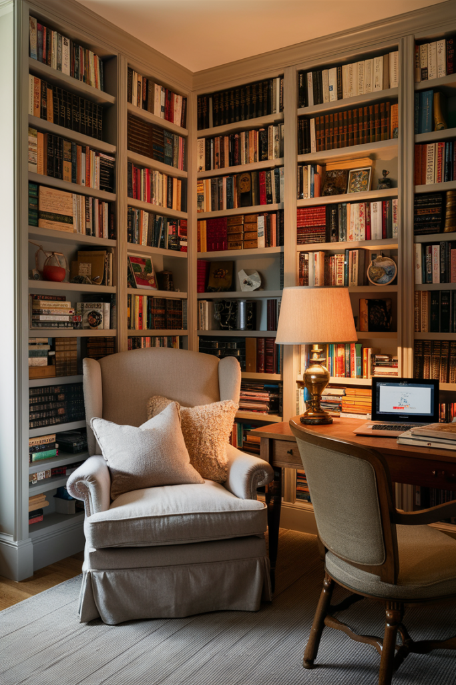
2. Compact and Multi-Functional
For anyone whose "home office" doubles as a dining table, a makeup station, and the cat's favorite nap spot, this one's especially relevant.
A compact desk that folds away, furniture that pulls double duty, and smart vertical storage all make a tiny footprint genuinely workable.
A massive dedicated room was never actually required, smart, considered design does more for a small space than square footage ever could.
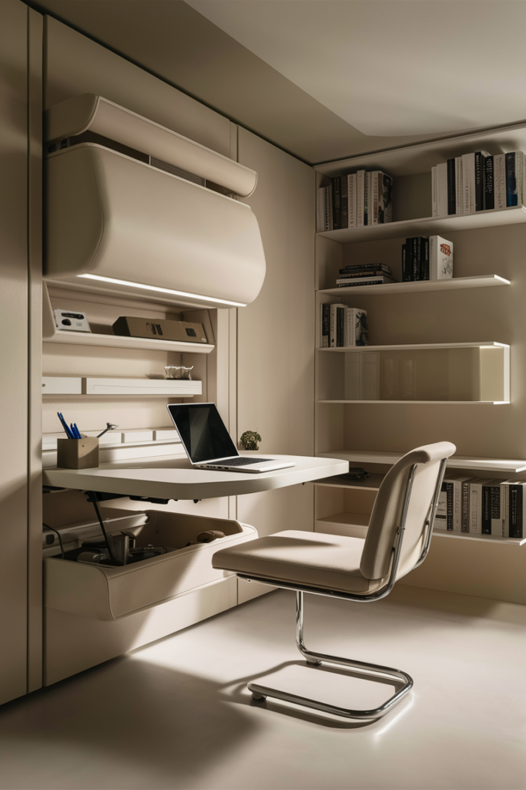
3. Rustic Farmhouse
For the feeling of working from a cozy country retreat, even smack in the middle of a city, rustic farmhouse style delivers that escape.
Reclaimed wood, warm neutral tones, and simple, sturdy furniture build a space that feels welcoming rather than purely functional.
It turns the start of a workday into something closer to lighting a fire and settling in with a journal, just with spreadsheets instead.
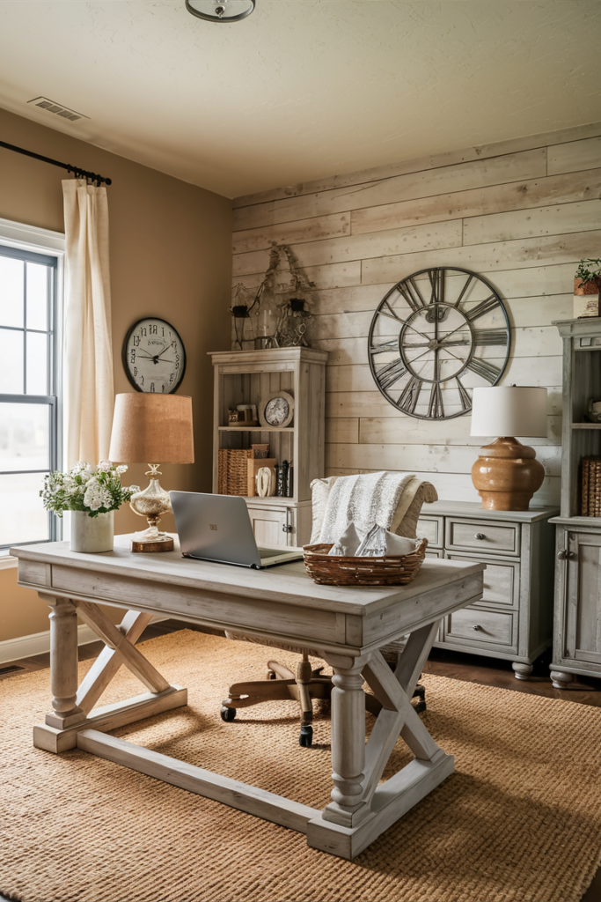
4. Smart Tech Office
For anyone who'd rather optimize with technology than lean on rustic wood and warm lighting, a smart tech office is the move.
Clean cable management, integrated charging, and sleek, purpose-built furniture turn the workspace into a genuinely well-oiled machine.
The right gear removes friction from the actual workday, the only real downside is that even the smartest setup can't fix a cranky printer.
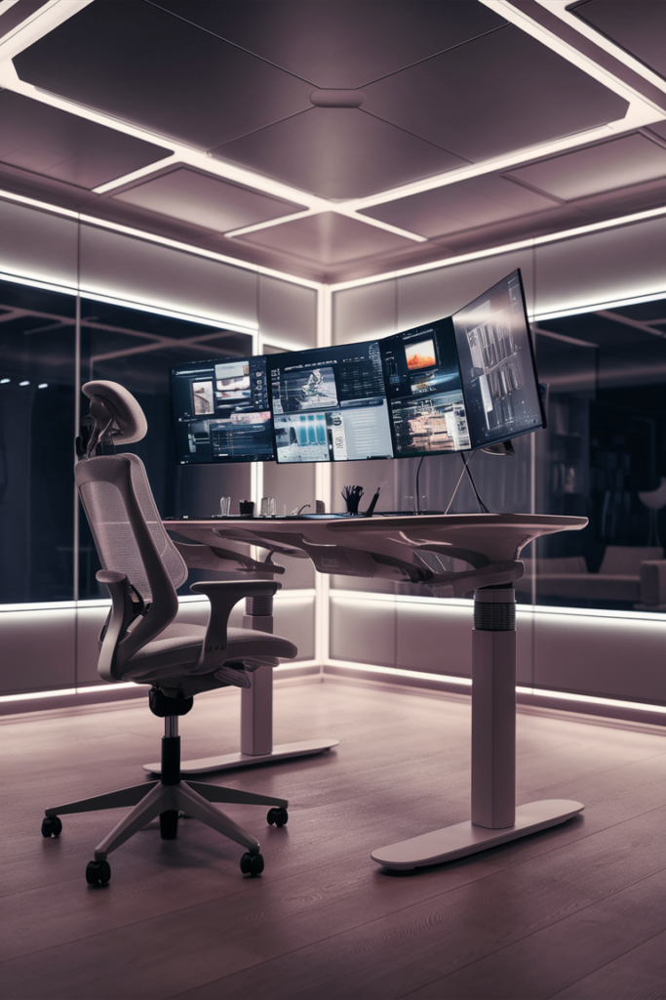
5. Classic Elegance
For a space that feels like a calm, collected retreat rather than a hustle zone, classic elegance delivers a genuinely timeless look.
Rich wood furniture, polished brass details, and a refined, restrained color palette all contribute to that quiet sophistication.
It reads as the office of someone running their own quiet operation, composed, deliberate, and never trying too hard to prove it.
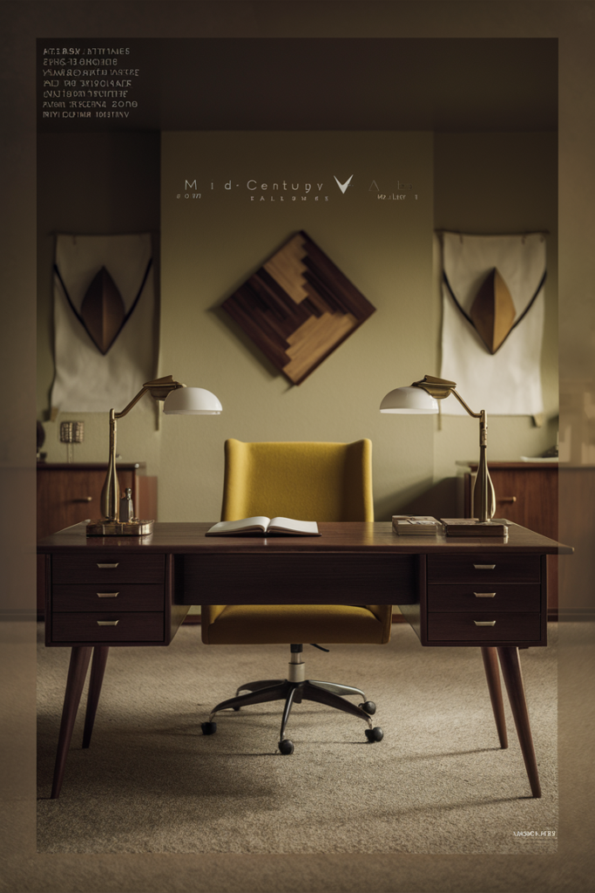
6. Floating Desk Setup
Limited square footage doesn't rule out a real workspace. A floating desk solves that problem directly, without needing a dedicated room.
Mounted directly to the wall, it fits a bedroom corner, a small apartment, or any awkward nook that wasn't doing much else before.
It proves that form and function can coexist even in the tightest footprint, no massive office required to get a real setup.
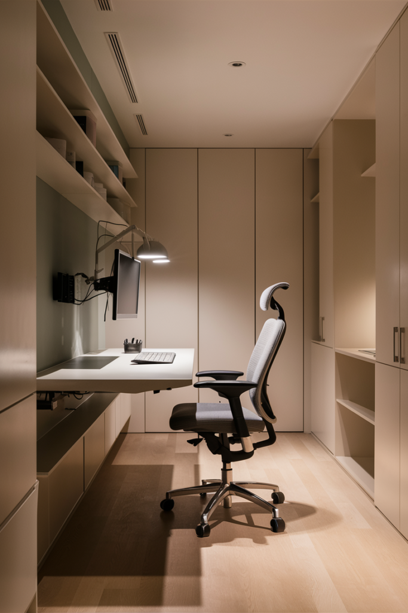
7. Artistic and Eclectic
An office doesn't have to be boring just because it's functional. For anyone who thrives on creative chaos, an eclectic setup matches that energy directly.
Mismatched furniture, bold art, and a mix of colors and patterns that technically shouldn't work together, but somehow do, define this style.
It's a space built to fuel creativity rather than contain it, treating most design rules as loose suggestions rather than requirements.
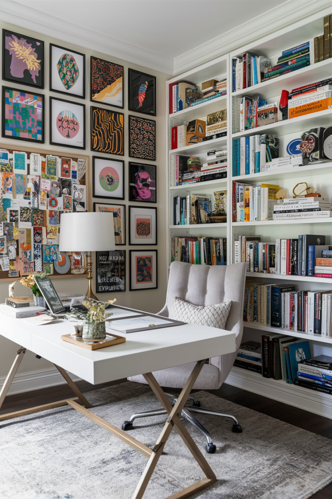
8. Soft Pastel Haven
For anyone who finds bold colors a little overwhelming, a soft pastel palette offers a genuinely gentler alternative.
Blush pinks, pale blues, and soft lavender tones keep the whole room feeling airy, dreamy, and easy to sit in for hours.
It's the kind of space that feels like a quiet exhale the moment the door closes behind someone sitting down to work.
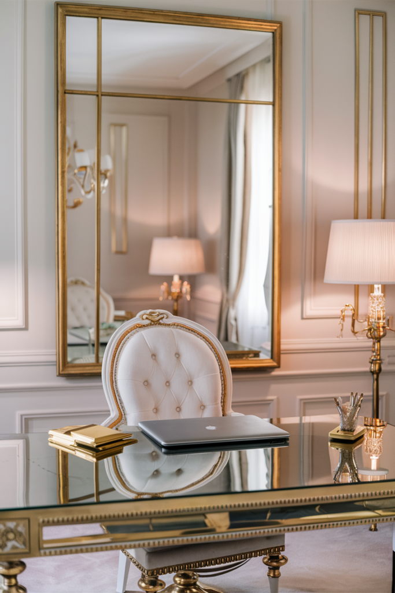
9. Dark and Moody
Sometimes a workspace calls for something that feels grounded, serious, and a little mysterious. A dark, moody office nails that tone directly.
Charcoal or deep navy walls, rich wood furniture, and warm, low lighting all contribute to a space that feels distinctly grown-up.
It reads as a room where real decisions get made, composed and in control, even on days that don't actually feel that way.
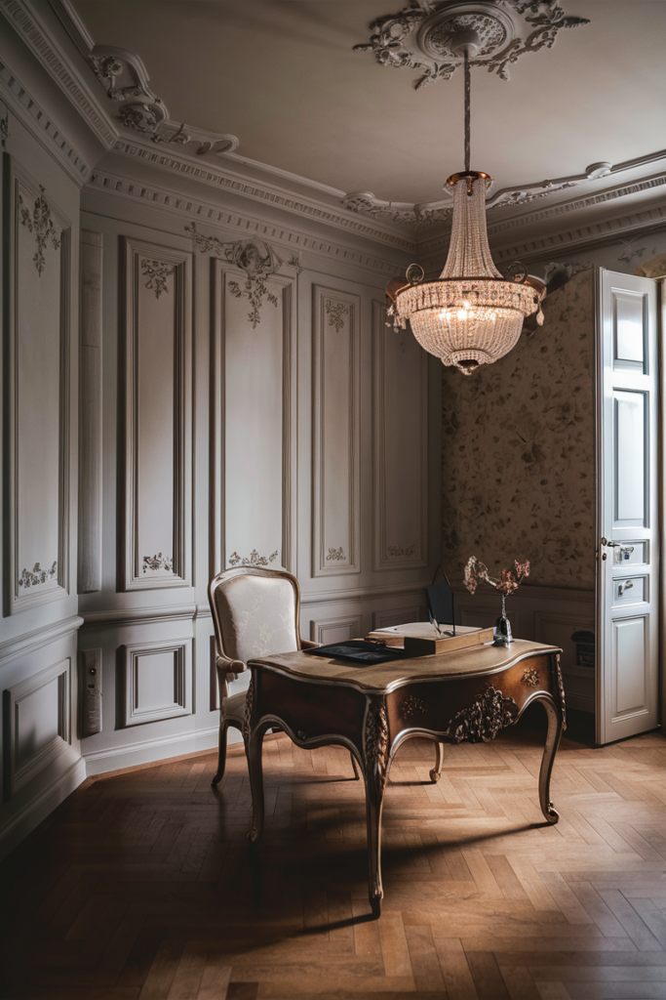
10. Modern Glam
A workspace can absolutely have a little sparkle in it. Modern glam leans into that directly, mixing plush textures with metallic accents.
A velvet chair, a gold-accented lamp, and a mirrored or lacquered surface or two all add real glamour without sacrificing function.
There's no rule that a productive office has to look purely utilitarian, serious work and a little shine aren't mutually exclusive.
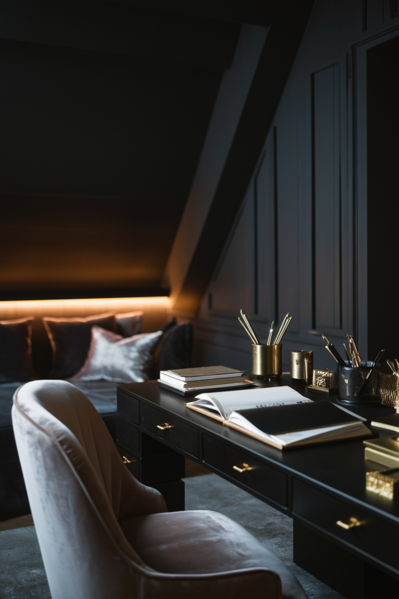
11. Nature-Inspired Zen
Work is stressful enough without a workspace that adds to the pressure. A nature-inspired, zen office counters that directly.
Natural materials, soft greenery, and an intentionally minimal layout create a genuinely peaceful space to sit down in.
The calmer the room feels, the less intimidating even a long to-do list ends up reading on a Monday morning.
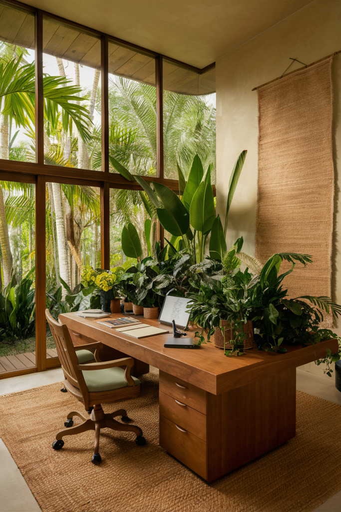
12. Cozy Cottagecore
For anyone who pictures their ideal workday involving a little nature, soft lighting, and a warm drink in hand, cottagecore delivers exactly that.
Vintage furniture, soft textiles, dried flowers, and warm lamp lighting build a space that feels pulled straight from a quiet countryside novel.
It makes the whole workday feel a little less like a grind and a little more like settling into a favorite reading corner.
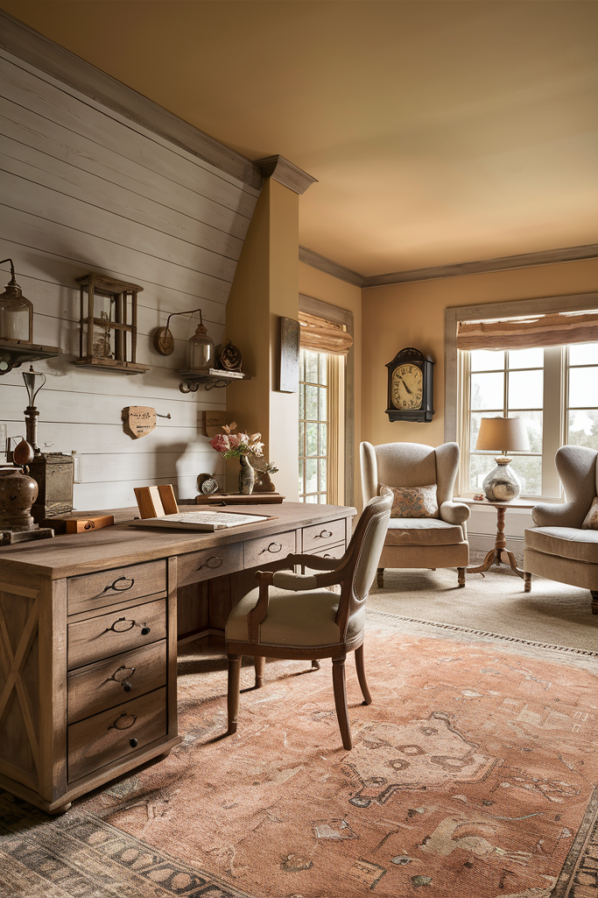
13. Industrial Edge
For clean lines with a bit more personality, industrial design strikes a genuinely good balance between polished and raw.
Exposed metal, concrete or brick textures, and simple black hardware all add real character without tipping into messy.
The result reads as capable and a little edgy, a workspace that looks like serious work actually happens there.
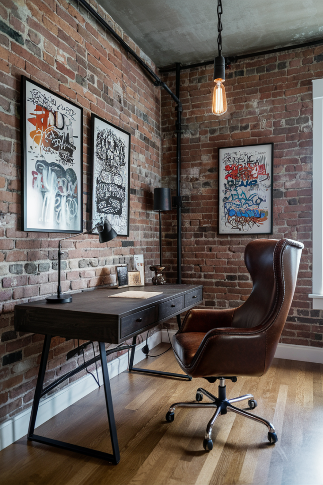
14. Boho Chic
For anyone who thrives on creative energy, a bohemian home office brings a little organized chaos into the mix, and in the best way.
Layered textures, warm colors, and a slightly wild mix of patterns and plants build a space that feels genuinely lived-in.
It has a way of making the whole room feel like a curated mood board brought to life, rather than a standard desk setup.
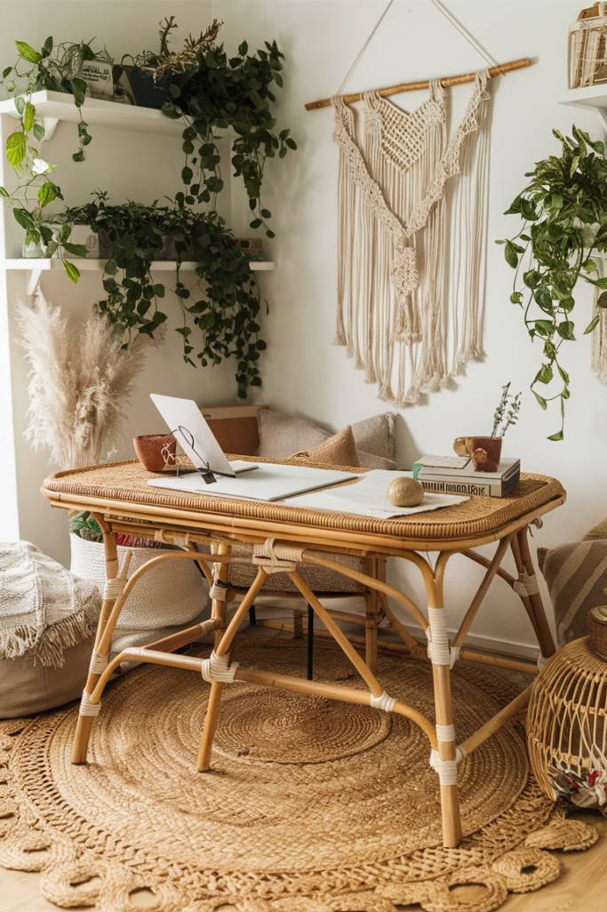
15. Scandinavian Simplicity
Soft lighting, blonde wood, and a tight neutral palette form the backbone of Scandinavian style, and it consistently nails the balance of peaceful and productive.
This look makes an office feel like somewhere worth spending time, rather than just a spot to grind through emails.
The warmth of the wood keeps it from reading as cold or sterile, even with such a restrained color palette throughout.
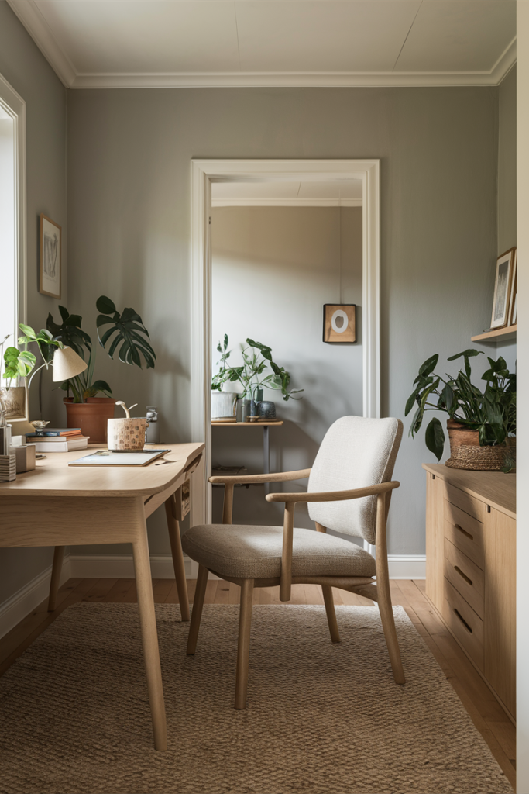
16. Minimalist Monochrome
For anyone who finds clutter genuinely stressful, a monochrome, minimalist setup removes almost all visual noise from the equation.
A single neutral color family, clean surfaces, and furniture kept to the essentials make the whole room feel calm the moment it's entered.
A calmer space tends to translate into a calmer mind, it's hard to focus in a room that's visually fighting for attention.
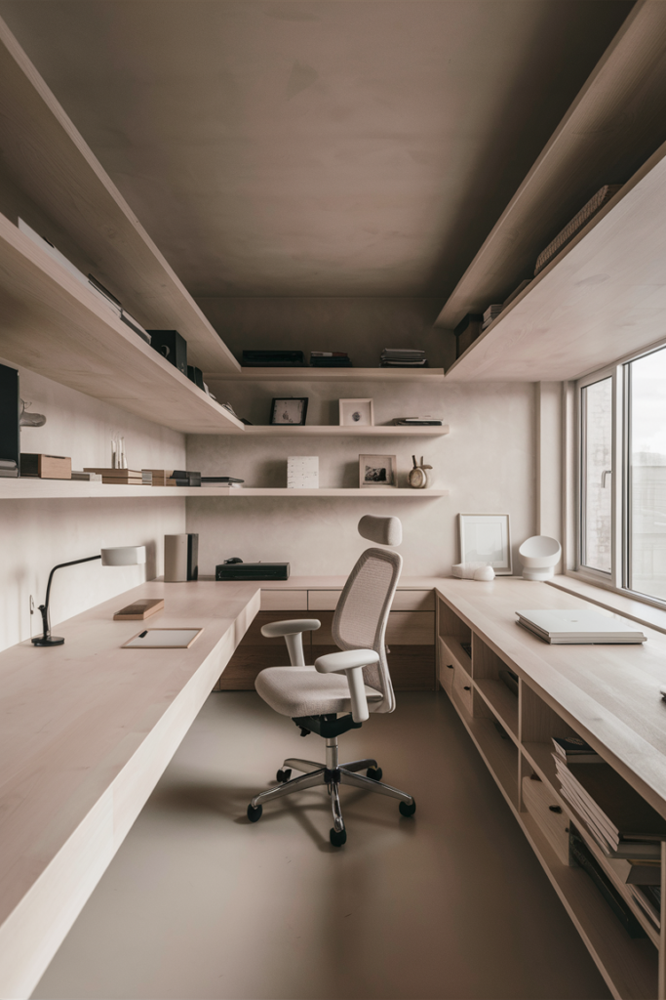
Final Thoughts
A home office should work just as hard as the person using it. Whether the goal is calm, creative, glamorous, or purely functional, none of these sixteen styles require a boring workspace to get there.
Even with a small footprint or a tight budget, there's a version of this that feels intentional and genuinely personal. A workspace that actually feels good tends to get more done in it, rearranging the desk might be worth it after all.